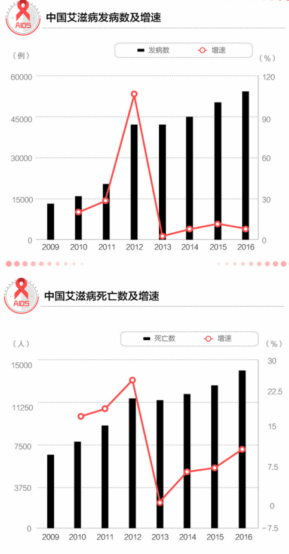

艾滋病的认识
研究认为，艾滋病起源于非洲，后由移民带入美国。1981年6月5日，美国疾病预防控制中心在《发病率与死亡率周刊》上登载了5例艾滋病病人的病例报告，这是世界上第一次有关艾滋病的正式记载。1982年，这种疾病被命名为"艾滋病"。不久以后，艾滋病迅速蔓延到各大洲。1985年，一位到中国旅游的外籍人士患病入住北京协和医院后很快死亡，后被证实死于艾滋病，这是我国第一次发现艾滋病病例。
临床表现
 临床表现病因
临床表现病因
发病以青壮年较多，发病年龄80%在18～45岁，即性生活较活跃的年龄段。在感染艾滋病后往往患有一些罕见的疾病如肺孢子虫肺炎、弓形体病、非典型性分枝杆菌与真菌感染等。HIV感染后，最开始的数年至10余年可无任何临床表现。一旦发展为艾滋病，病人就可以出现各种临床表现。一般初期的症状如同普通感冒、流感样，可有全身疲劳无力、食欲减退、发热等，随着病情的加重，症状日见增多，如皮肤、黏膜出现白念球菌感染，出现单纯疱疹、带状疱疹、紫斑、血疱、淤血斑等； 更多
临床表现病因
持续发烧、虚弱、盗汗，持续广泛性全身淋巴结肿大。特别是颈部、腋窝和腹股沟淋巴结肿大更明显。淋巴结直径在1厘米以上，质地坚实，可活动，无疼痛。体重下降在3个月之内可达10%以上，最多可降低40%，病人消瘦特别明显
长期咳嗽、胸痛、呼吸困难、严重时痰中带血。食欲下降、厌食、恶心、呕吐、腹泻、严重时可便血。通常用于治疗消化道感染的药物对这种腹泻无效。
更多

临床表现病因
头晕、头痛、反应迟钝、智力减退、精神异常、抽搐、偏瘫、痴呆等。可出现多种恶性肿瘤，位于体表的卡波济肉瘤可见红色或紫红色的斑疹、丘疹和浸润性肿块。主要是中度以上细胞免疫缺陷包括：CD4+T淋巴细胞耗竭，外周血淋巴细胞显著减少，CD4200/μl，CD4/CD8s1.0，（正常人为1.25～2.1），迟发型变态反应皮试阴性，有丝分裂原刺激反应低下。NK细胞活性下降。
更多
艾滋病状况
